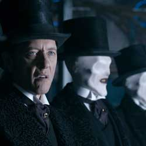

|
| Home The Doctors The Companions The Villains Show History |
The Great IntelligenceThe Great Intelligence is a character from the British science fiction television series Doctor Who. Although the Great Intelligence has no physical form, it is capable of communicating, both by itself and through possession, with other characters within the series. The Great Intelligence was originally created by Henry Lincoln and Mervyn Haisman and first appeared in the 1967 serial The Abominable Snowmen where he encountered the Second Doctor and his companions Jamie and Victoria. The Great Intelligence tries to form a physical body so as to conquer the Earth, making use of Yetirobots that resemble the cryptozoological creatures. Initially the Great Intelligence used the Yeti robots to scare off curiosity seekers, only later using them as an army. Both the Intelligence and the Yeti returned in its sequel The Web of Fear.
|
|
Ryan Moeller |
Ann Marie Skjold |
Content Derived From: |